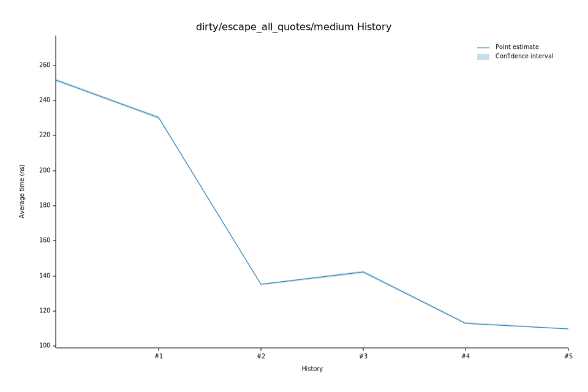

# 172023-02-03T23:02:44-08:00
|
Lower Bound |
Estimate |
Upper Bound |
| Value: |
145.44ns |
146.16ns |
146.94ns |
| Throughput: |
806.53MiB/s |
802.57MiB/s |
798.31MiB/s |
| Change in Value: |
+6.4815% |
+7.6982% |
+8.8776% |
| Change in Throughput: |
-6.0870% |
-7.1480% |
-8.1537% |
No change in performance detected.
# 162023-01-31T06:03:07-08:00
|
Lower Bound |
Estimate |
Upper Bound |
| Value: |
133.70ns |
134.28ns |
134.92ns |
| Throughput: |
877.36MiB/s |
873.55MiB/s |
869.45MiB/s |
| Change in Value: |
-13.156% |
-12.370% |
-11.572% |
| Change in Throughput: |
+15.150% |
+14.116% |
+13.087% |
No change in performance detected.
# 152023-01-21T07:25:18-08:00
|
Lower Bound |
Estimate |
Upper Bound |
| Value: |
154.87ns |
155.42ns |
156.02ns |
| Throughput: |
757.43MiB/s |
754.72MiB/s |
751.83MiB/s |
| Change in Value: |
-2.1735% |
-1.3769% |
-0.6672% |
| Change in Throughput: |
+2.2218% |
+1.3962% |
+0.6717% |
No change in performance detected.
# 142023-01-21T06:23:04-08:00
|
Lower Bound |
Estimate |
Upper Bound |
| Value: |
156.69ns |
157.09ns |
157.50ns |
| Throughput: |
748.61MiB/s |
746.74MiB/s |
744.80MiB/s |
| Change in Value: |
-1.6824% |
-0.5312% |
+0.5553% |
| Change in Throughput: |
+1.7112% |
+0.5340% |
-0.5522% |
Change within noise threshold.
# 132023-01-21T06:18:54-08:00
|
Lower Bound |
Estimate |
Upper Bound |
| Value: |
157.19ns |
157.75ns |
158.38ns |
| Throughput: |
746.25MiB/s |
743.60MiB/s |
740.63MiB/s |
| Change in Value: |
-1.5920% |
-0.2942% |
+0.9894% |
| Change in Throughput: |
+1.6178% |
+0.2950% |
-0.9797% |
Change within noise threshold.
# 122023-01-21T06:14:23-08:00
|
Lower Bound |
Estimate |
Upper Bound |
| Value: |
157.24ns |
157.71ns |
158.23ns |
| Throughput: |
746.00MiB/s |
743.77MiB/s |
741.36MiB/s |
| Change in Value: |
-0.1413% |
+0.7593% |
+1.7989% |
| Change in Throughput: |
+0.1415% |
-0.7535% |
-1.7671% |
Change within noise threshold.
# 112023-01-21T06:09:52-08:00
|
Lower Bound |
Estimate |
Upper Bound |
| Value: |
157.06ns |
157.52ns |
158.03ns |
| Throughput: |
746.86MiB/s |
744.68MiB/s |
742.28MiB/s |
| Change in Value: |
-1.1555% |
-0.1226% |
+0.7624% |
| Change in Throughput: |
+1.1690% |
+0.1228% |
-0.7566% |
Change within noise threshold.
# 102023-01-21T06:05:27-08:00
|
Lower Bound |
Estimate |
Upper Bound |
| Value: |
156.71ns |
157.15ns |
157.60ns |
| Throughput: |
748.54MiB/s |
746.43MiB/s |
744.31MiB/s |
| Change in Value: |
-1.1470% |
+0.2328% |
+1.4850% |
| Change in Throughput: |
+1.1603% |
-0.2322% |
-1.4633% |
Change within noise threshold.
# 92023-01-21T06:00:57-08:00
|
Lower Bound |
Estimate |
Upper Bound |
| Value: |
156.43ns |
157.00ns |
157.64ns |
| Throughput: |
749.87MiB/s |
747.14MiB/s |
744.09MiB/s |
| Change in Value: |
+2.2285% |
+3.3849% |
+4.7300% |
| Change in Throughput: |
-2.1799% |
-3.2740% |
-4.5164% |
No change in performance detected.
# 82023-01-14T18:24:37-08:00
|
Lower Bound |
Estimate |
Upper Bound |
| Value: |
151.51ns |
152.15ns |
152.81ns |
| Throughput: |
774.21MiB/s |
770.97MiB/s |
767.65MiB/s |
| Change in Value: |
+6.7719% |
+7.8749% |
+8.8744% |
| Change in Throughput: |
-6.3424% |
-7.3000% |
-8.1510% |
No change in performance detected.
# 72023-01-13T17:17:14-08:00
|
Lower Bound |
Estimate |
Upper Bound |
| Value: |
139.46ns |
140.26ns |
141.10ns |
| Throughput: |
841.12MiB/s |
836.33MiB/s |
831.34MiB/s |
| Change in Value: |
-15.449% |
-14.570% |
-13.757% |
| Change in Throughput: |
+18.272% |
+17.055% |
+15.952% |
No change in performance detected.
# 62023-01-13T17:13:47-08:00
|
Lower Bound |
Estimate |
Upper Bound |
| Value: |
163.62ns |
164.18ns |
164.76ns |
| Throughput: |
716.92MiB/s |
714.47MiB/s |
711.94MiB/s |
| Change in Value: |
+45.553% |
+47.224% |
+48.886% |
| Change in Throughput: |
-31.297% |
-32.076% |
-32.835% |
No change in performance detected.
# 52023-01-13T17:08:33-08:00
|
Lower Bound |
Estimate |
Upper Bound |
| Value: |
109.54ns |
109.90ns |
110.28ns |
| Throughput: |
1070.83MiB/s |
1067.32MiB/s |
1063.67MiB/s |
| Change in Value: |
-1.4169% |
-0.5120% |
+0.5210% |
| Change in Throughput: |
+1.4372% |
+0.5146% |
-0.5183% |
Change within noise threshold.
# 42023-01-13T17:03:13-08:00
|
Lower Bound |
Estimate |
Upper Bound |
| Value: |
112.68ns |
113.16ns |
113.63ns |
| Throughput: |
1040.98MiB/s |
1036.62MiB/s |
1032.36MiB/s |
| Change in Value: |
-21.315% |
-20.727% |
-20.185% |
| Change in Throughput: |
+27.088% |
+26.147% |
+25.289% |
No change in performance detected.
# 32023-01-13T16:59:46-08:00
|
Lower Bound |
Estimate |
Upper Bound |
| Value: |
141.76ns |
142.36ns |
143.03ns |
| Throughput: |
827.47MiB/s |
823.97MiB/s |
820.14MiB/s |
| Change in Value: |
+2.7834% |
+4.0171% |
+5.0807% |
| Change in Throughput: |
-2.7080% |
-3.8619% |
-4.8350% |
No change in performance detected.
# 22023-01-13T16:57:47-08:00
|
Lower Bound |
Estimate |
Upper Bound |
| Value: |
134.75ns |
135.19ns |
135.65ns |
| Throughput: |
870.49MiB/s |
867.68MiB/s |
864.76MiB/s |
| Change in Value: |
-41.907% |
-41.261% |
-40.497% |
| Change in Throughput: |
+72.136% |
+70.243% |
+68.059% |
No change in performance detected.
# 12023-01-13T16:55:47-08:00
|
Lower Bound |
Estimate |
Upper Bound |
| Value: |
229.69ns |
230.30ns |
230.90ns |
| Throughput: |
510.69MiB/s |
509.34MiB/s |
508.03MiB/s |
| Change in Value: |
-8.2885% |
-7.5534% |
-6.7675% |
| Change in Throughput: |
+9.0376% |
+8.1706% |
+7.2587% |
No change in performance detected.
# 02023-01-13T16:53:49-08:00
|
Lower Bound |
Estimate |
Upper Bound |
| Value: |
250.75ns |
251.54ns |
252.32ns |
| Throughput: |
467.80MiB/s |
466.34MiB/s |
464.89MiB/s |